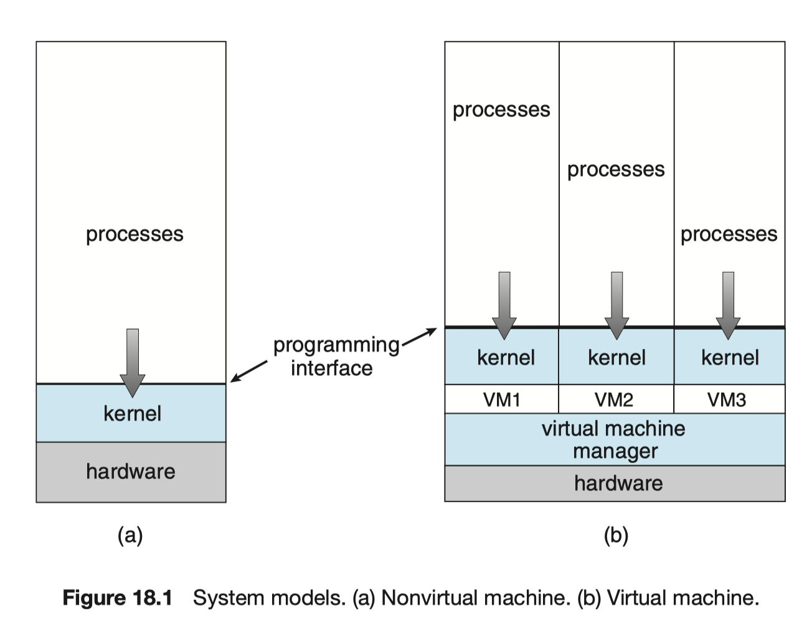
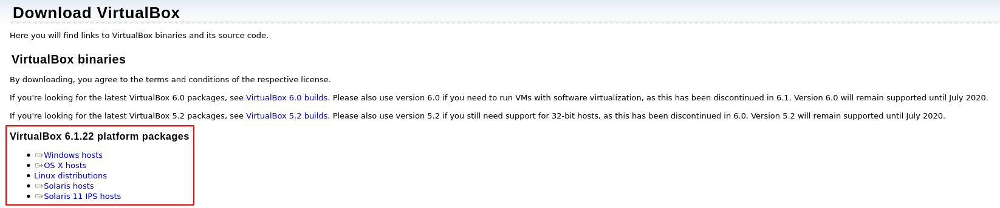
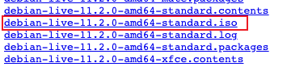
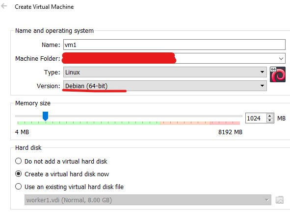
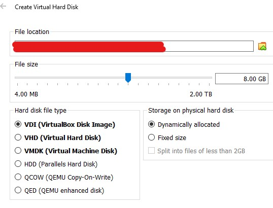
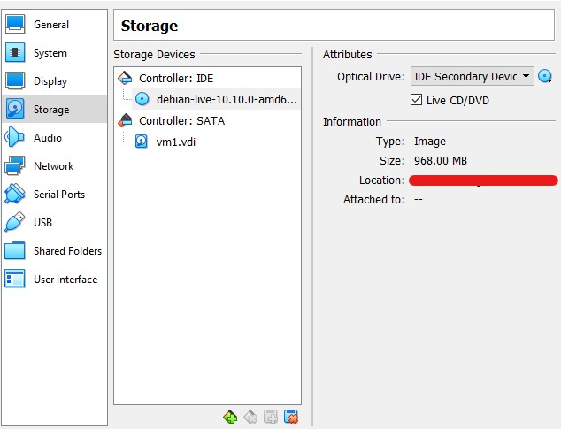
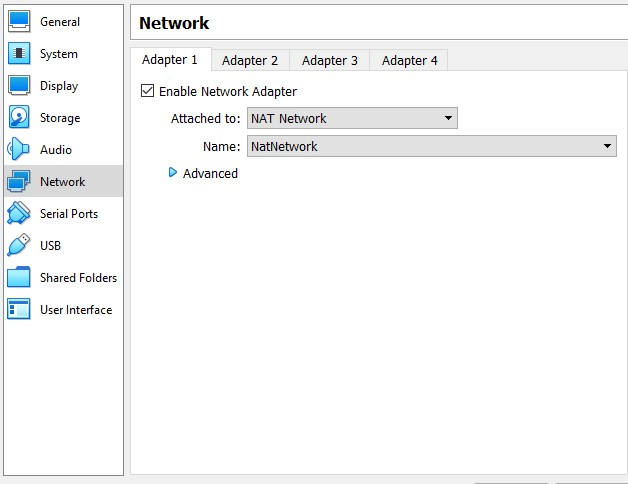
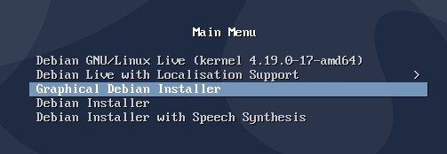

实验一：简单集群搭建
1 实验简介
本次实验要求使用四台虚拟机搭建一个简易的集群，并对该集群进行性能测试，最后提交测试结果和实验报告。
集群搭建的任务包括创建虚拟机、安装 Linux 发行版、配置网络和 ssh 通信。
性能测试通过使用 OpenMPI 将 HPL 测试程序分配到四个虚拟机节点上执行。因此，需要下载并编译 OpenMPI、BLAS 和 HPL 的源代码，其中 OpenMPI、BLAS是 HPL 的依赖项。
2 实验环境
- 一台计算机，操作系统任意
- Hypervisor (本手册为 Virtual Box)
- 虚拟机 * 4
3 实验基础知识介绍
3.1 计算机集群
计算机集群是连接在一起、协同工作的一组计算机，集群中的每个计算机都是一个节点。在集群中，由软件将不同的计算任务（task）分配（schedule）到相应的一个或一群节点（node）上。本次实验中，需要使用 OpenMPI 将 HPL 程序作为 task 分配到集群中的四个节点上。
3.1.1 虚拟机
虚拟机为运行在其中的guest操作系统和应用提供了一个模拟的硬件环境，和真实的硬件保持一样的接口和表现，同时也如真实的硬件一样为其中的操作系统和程序提供保护机制、管理接口和资源限制。一个简易的非虚拟机和虚拟机结构的对比如下图（来源：Abraham Silberschatz, Peter Baer Galvin, Greg Gagn, Operating System Concepts, 10th edition, Chapter 18)
一种常见的虚拟机机制实现方式便是通过 hypervisor（又称VMM: Virtual Machnie Manager）来为 guest 操作系统提供模拟硬件环境，这也为在一台物理机上运行多个虚拟机提供了可能。
本手册中使用 Virtural Box 作为 hypervisor 进行示范和说明。

3.1.2 Linux发行版
Linux 发行版（也被叫做 GNU/Linux 发行版），为一般用户预先集成好的 Linux 操作系统及各种应用 软件。一般用户不需要重新编译，在直接安装之后，只需要小幅度更改设置就可以使用，通常以软件包管理系统来进行应用软件的管理。Linux 发行版通常包含了包括桌面环境、办公包、媒体播放器、数据库等应用软件。这些操作系统通常由 Linux 内核、以及来自 GNU 计划的大量的函数库，和基于 X Window 的图形界面。现在有超过 300 个 Linux发行版。大部分都正处于活跃的开发中，不断地改进。由于大多数软件包是自由软件和开源软件，所以 Linux 发行版的形式多种多样——从功能齐全的桌面系统以及服务器系统到小型系统 (例如一些嵌入式设备)。除了一些定制软件 (如安装和配置工具)，发行版通常只是将特定的应用软件安装在一堆函数库和内核上，以满足特定用户的需求。
这些发行版可以分为商业发行版，比如 Ubuntu（Canonical 公司）、Fedora（Red Hat）、openSUSE （Novell）和 Mandriva Linux；和社区发行版，它们由自由软件社区提供支持，如 Debian 和 Gentoo；也有发行版既不是商业发行版也不是社区发行版，如 Slackware。
3.2 HPL
HPL是一个可以在分布式系统上运行的解稠密线性系统的软件包，同时也可以被用来做高性能计算Linpack测试（High Performance Computing Linpack Benchmark）。
关于HPL的详细介绍可参考 https://www.netlib.org/benchmark/hpl/
The HPL software package requires the availibility on your system of an implementation of the Message Passing Interface MPI (1.1 compliant). An implementation of either the Basic Linear Algebra Subprograms BLAS or the Vector Signal Image Processing Library VSIPL is also needed. Machine-specific as well as generic implementations of MPI, the BLAS and VSIPL are available for a large variety of systems.
HPL 需要系统中有 MPI 实现和 BLAS 实现，因此我们需要在安装 HPL 前在虚拟机中安装 OpenMPI 和 BLAS。
OpenMPI 是一个开源的 Message Passing Interface 实现，由一些科研机构和企业一起开发和维护。MPI 是一套标准化、可移植的消息传递标准，它被设计用于支持并行计算系统的架构，使得开发者能够方便地开发可移植的消息传递程序。同时，MPI 编程能力在高性能计算的实践与学习中也是非常基础的技能。
BLAS 是 Basic Linear Algebra Subprograms 的缩写，本手册只要求将其作为 HPL 的依赖项下载安装即可，无需过多了解。
4 实验步骤
4.1 下载 Hypervisor 和 Linux 光盘映像文件
4.1.1 Hypervisor
在创建虚拟机之前，你需要先准备好 Hypervisor，在本手册中，我们以 Virtual Box 为例，其他的 Hypervisor 请自行参阅相关材料：
-

注意不要选错宿主机平台！
-
Docker
由于本次实验希望大家从裸机手工完成完整的集群配置，包括网络和系统软件环境等，因此本次实验不推荐大家使用 Docker，如果学有余力可以尝试使用 Docker 复现本次实验，作为加分项（虚拟机为必做）。
4.1.2 Linux 光盘映像文件
本手册所使用的范例发行版是 Debian 11，同学可根据自己的喜好和经验挑选适合的发行版。 Debian 下载点（如果网速问题可访问国内镜像）：

花花绿绿的映像，该怎么选择好呢？图中带有 mate 字眼的映像代表附有 mate 桌面，为了最精简安装，本手册采 standard 版本（不含桌面）。
-
不推荐使用的光盘映像
-
从互联网下载 (关键字：Install via Internet / netinstall)
此类镜像是在安装过程中访问互联网下载需要的包，由于虚拟机可能无法访问互联网，部分镜像虽然体积小但缺少很多重要的命令，因此不要挑选此类镜像。
-
带有桌面环境的光盘映像 (关键字：Desktop / 以及后面带有 gnome, kde, lxde 等词的映像)
如果计算机上的磁盘空间较不充足，建议不要下载带有桌面环境的光盘映像，如果你偏好桌面且空间足够可以忽略。
-
你不熟悉的光盘映像 / 没有图形界面(GUI)安装程序的光盘映像
Linux 发行版相当多，不熟悉或没使用过 Linux 的同学建议参考本手册，相信自己已经有一定基础的同学可以忽略。
-
4.2 搭建集群并安装相关程序
4.2.1 创建虚拟机
准备好 Hypervisor 跟 光盘映像后，就可以着手安装一个虚拟机了，请参考 Virtual Box 手册和相关教程。
-
选择发行版、内存、磁盘空间
 
选择自己要安装的发行版（如果没有直接选 Linux 即可），内存和磁盘空间根据实际情况分配。
-
插入发行版映像文件和配置网络

选取刚下载的映像文件。

网络对虚拟机来说十分复杂，如果你不熟悉相关的名词，在一台虚拟机的情况下，直接默认的 NAT 即可。选择 NAT 的另一个好处是，因为手册需要节点间彼此互连，因此使用 NAT Network 的同时，所有节点也可访问互联网。
不需要互联网或者使用有线网的同学也可以考虑使用 Bridged 或 Internal Network，具体请参考手册上的说明：Virtual Networking。
小贴士 - 如果你的虚拟机无法连上网，可能是宿主机的问题，请排查宿主机的网络状况。 - 由于学校的网络情况，在学校中使用虚拟机的同学还是以 NAT Network 为主较方便。
-
进入图形安装程序
在启动虚拟机后，不要直接进入 Live CD，直接进入安装程序，照着引导走即可。

-
安装完成并重启
在刚刚插入映像文件的地方取消选取映像文件，否则下次重启时还会进入 Live CD。
4.2.2 下载并安装 OpenMPI
由于系统中的包通常比较旧，因此我们从 OpenMPI 的官网中下载最新版本源码自行编译安装：OpenMPI 下载。
小贴士 - 在虚拟机可联网的环境下，可直接使用
wget或curl来下载，会方便许多。 - 在编译前，先了解make和autoconf，可以减少不少除错时间。
-
修改
PATH和LD_LIBRARY_PATH请将找到 OpenMPI 二进制文件的目录加入
PATH环境变量，OpenMPI 库的目录加入LD_LIBRARY_PATH环境变量。
4.2.3 下载并安装 HPL
下载地址：https://netlib.org/benchmark/hpl/software.html
-
BLAS
HPL 的依赖除了一个 MPI 实现（在手册中是 OpenMPI）外，还需要一个 BLAS 实现，我们可以从 netlib 下载其中一个实现，虽然没有优化过，但拿来测试已经足够了。
-
检查
gcc/gfortran环境BLAS 需要
gcc/gfortran来编译，请务必检查自己虚拟机中编译器是否存在及其版本。 -
编译 BLAS/CBLAS
先编译 BLAS，再参考
README和INSTALL修改 CBLAS 的 Makefile 并编译 （需要 BLAS 的链接文件）。
-
-
修改 HPL Makefile
解压 HPL 压缩包后，在根目录的
setup/文件夹下有 Makefile 相关文件的模板(Make.xxx，后缀代表架构)，复制到根目录并保存。参考
README，根据自己情况修改以下参数：
# Make.test
# arch
ARCH = test
...
# MPI
MPdir = /path/to/your/mpi/
MPinc = -I$(MPdir)/include64
MPlib = $(MPdir)/libmpi.so
# BLAS
LAdir = /path/to/your/blas
LAinc =
LAlib = $(LAdir)/lib
...
# compiler
CC = /path/to/your/mpicc
LINKER = $(CC)
修改当前目录下 Make.top 中的 arch 参数，需与 Make.test 中的一致。
- 编译
4.2.4 克隆节点
在 Virtual Box 中，克隆已经配置完成的节点成为集群中的其他节点，本手册范例中仅克隆一个（集群中两个节点），可克隆更多。
4.3 测试集群
4.3.1 ping
ping 是测试节点网络连通性最为简单的方式，在进行其他测试前，请先确认能 ping 通所有节点。
4.3.2 配置 ssh
ssh 是相当常用的，实现安全远程连接的方式，其原理和使用、配置方法请查阅相关参考资料：Open SSH 网站
如果你没有 ssh 密钥，可以在其中一个节点创建一个：
.ssh/authorized_keys 中（可以利用 ssh-copy-id 命令来拷贝公钥，也可以直接使用 nc 将公钥作为文件传输）。复制完成后，注意检查 authorized_keys (600) 和 .ssh/ (700) 目录的权限，否则无法顺利 ssh。
-
ssh passphrase
如果自己的密钥有 passphrase，那么请使用
ssh-agent确保能暂时不用输入 passphrase，以免之后影响mpirun正确运行。
4.3.3 mpirun
尽管对 OpenMPI 十分陌生，我们还是能利用它来跑非 MPI 的程序，同学可以编写简单的 Helloworld 程序来测试 OpenMPI，或者直接使用 Unix 命令。
-
OpenMPI hostfile
两个节点都准备好后，我们可以试试
其中 slots 代表的意思是一个节点的 CPU 有多少核，由于我们创建虚拟机时仅分配一个核，因此这里的 slots 上限为 1 ，同学根据自己虚拟机的情况，修改 slots 的值。mpirun了！按照如下格式，编写 MPI 的 hostfile 并保存： -
测试程序
OpenMPI 需要测试程序为节点所共有或在节点上有相同路径，因为我们的第二个节点是克隆出来的，因此两个节点上的命令和 HPL 程序都会是相同路径， 此时运行以下命令就能看到每个节点上线了多久：
- 运行 HPL：
5 实验任务与要求
- 搭建四个节点的虚拟机并记录过程，要求提供必要的截图或配置文件
- 使用 OpenMPI 和 HPL 测试集群表现并记录结果